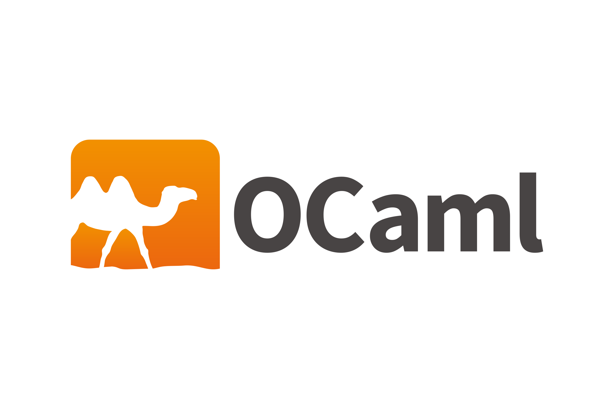

Je m'intéresse à l'informatique depuis 6 ans et j'ai pu passé par différents langages de programmation à différents niveaux de maîtrise.
Oui c'est vaste et c'est bien pour ça que je suis curieux ^^.
Voilà ce que j'ai appris :
Langages de programmation :

Java
Java est le langage que j'ai le plus approfondi et donc que je maîtrise le plus. J'ai pu apprendre beaucoup de choses intéressantes au niveau de ce langage : aux dernières nouvelles j'ai approfondi la conception objet avec le modèle MVC ainsi que la concurrence avec les threads.
API
C
Le langage C est parmi les langages où j'ai le plus de mal à maîtriser. Cela dit les profs m'ont bien ancré dans ce langage donc je m'y intéresse quand même. J'ai pu apprendre à manipuler les commandes de la norme POSIX, assez proche du "noyau".

HTML / CSS
Les premiers langages de programmation que j'ai appris à utiliser au lycée et ceux qui m'ont poussé à m'orienter vers l'informatique. Si je n'avais pas eu en 2nde la matière Sciences Numériques et Technologiques, qui sait vers quel autre domaine je me serais tourné. J'ai notamment appris à me servir de frameworks tel que Bootstrap.
API Bootstrap
SQL
Premier langage en base de donnée que j'ai appris à utiliser. C'est un langage intéressant à comprendre, surtout l'utilisation qui en est faite dans les entreprises. La conception de base de donnée m'a motivé à mieux me les représenter. Bien qu'il ne soit pas facile à sélectionner les bonnes données, les connaissances retirées sont enrichissantes.

Python
Un des premiers langages de programmation que j'ai appris à utiliser au lycée avec IPython. Maintenant que j'y pense, Python est un langage simple à manier du fait que les variables n'ont pas besoin d'être déclaré comparé aux autres langages.

OCaml
Le seul langage fonctionnel que j'ai appris à utiliser pour le moment et probablement le plus compliqué que j'ai pu connaître jusque là. Bien que ce soit assez compliqué des autres langages de mon point de vue, l'approche est différente de d'habitude, ce qui fait que ce langage est plutôt intéressant au final.

PHP
PHP est un langage que j'ai appris à utiliser avec d'autres notamment dans les bases de données (SQL) et les sites Web (HTML, CSS), ce qui fait que j'ai particulièrement apprécié travailler avec. Je suis surpris de ce qu'on peut faire en combinant des outils, beaucoup d'outils ^^.

Assembleur
Seul langage machine que j'ai pu apprendre à utiliser jusque là. Celui-ci est aussi spécial à manipuler en plus d'être un langage de bas niveau. Il était aussi compliqué qu'OCaml à manipuler comparé aux autres langages. Je suis curieux par conséquent ce que donnent les langages de plus hauts niveaux.